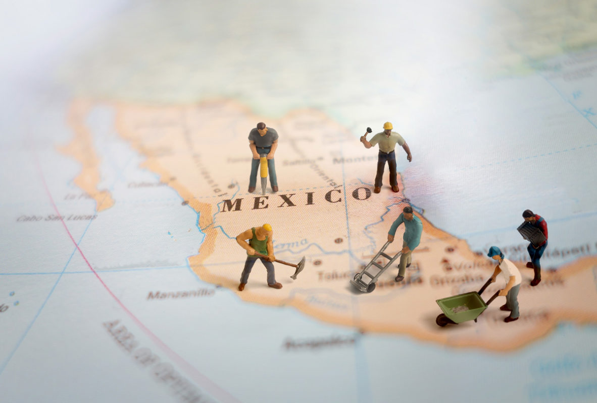

Entre las principales problemáticas sociales que se presentan se encuentra la falta de oportunidades de empleo para algunos habitantes. Esta situación afecta principalmente a los jóvenes, quienes en determinados casos se ven en la necesidad de trasladarse a ciudades cercanas en busca de oportunidades laborales, ya sea para continuar con sus estudios, contribuir al sostenimiento económico de sus familias o mejorar sus condiciones de vida. La migración temporal o permanente hacia otras localidades puede generar cambios en la dinámica familiar y comunitaria, debido a la disminución de la participación de algunos habitantes en las actividades cotidianas de la comunidad. Por otra parte, con el paso de los años se han incorporado diversos servicios e infraestructura que han contribuido al crecimiento y desarrollo de San Pedro Tepinapa Ejidal. Entre ellos se encuentran la clínica, el servicio de agua potable, el acceso a Internet, la señal telefónica, las carreteras pavimentadas y las mejoras realizadas en los puentes, entre otros. La incorporación de estos servicios ha permitido mejorar diferentes condiciones de vida de los habitantes y facilitar el acceso a recursos y servicios que anteriormente podían ser más limitados. Sin embargo, estos procesos de desarrollo también han generado transformaciones en algunos aspectos de la vida comunitaria. La incorporación de nuevas tecnologías, servicios y formas de comunicación puede influir en las prácticas culturales y en las costumbres que tradicionalmente se han transmitido entre generaciones. En este sentido, algunas prácticas y costumbres que formaban parte de la vida cotidiana de la comunidad pueden haber disminuido con el paso del tiempo. Por ello, resulta importante buscar un equilibrio entre el aprovechamiento de los avances y servicios que contribuyen al bienestar de la población y la preservación de las expresiones culturales, tradiciones y conocimientos que forman parte de la identidad de San Pedro Tepinapa Ejidal.